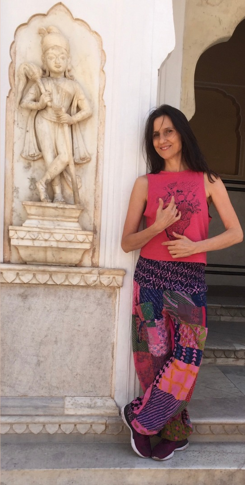
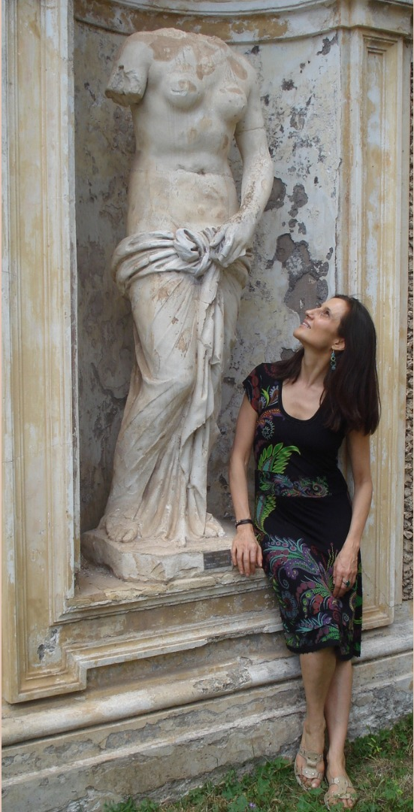
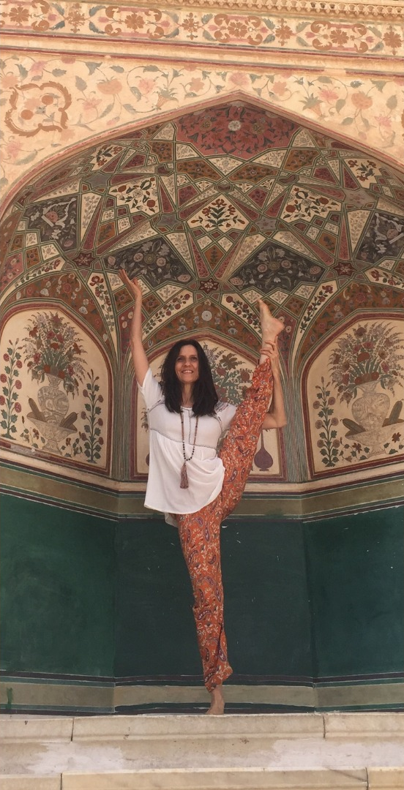
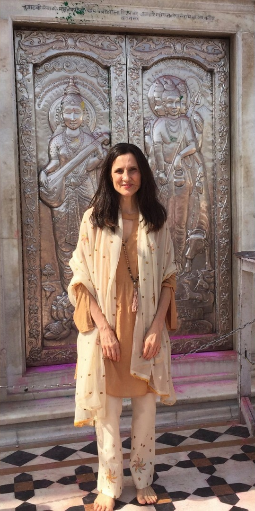
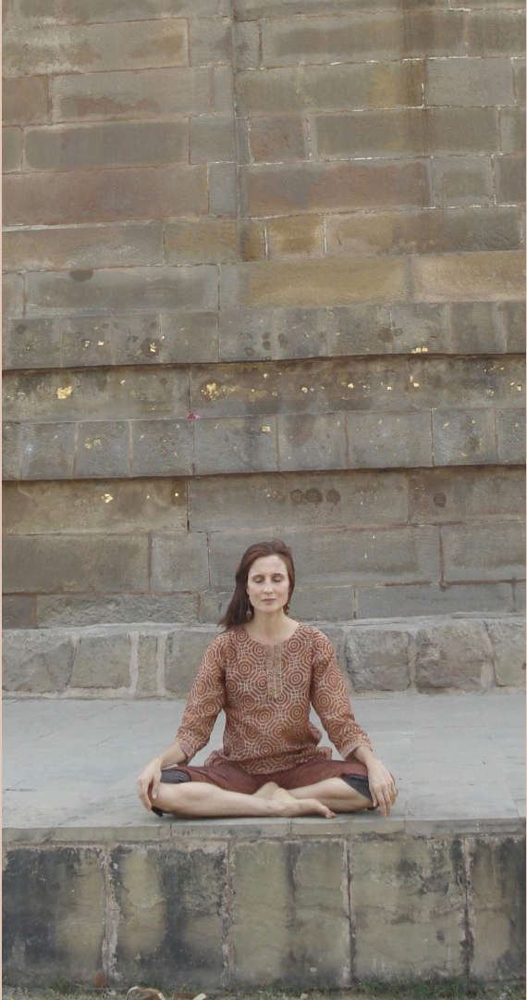

formación
Bailarina, coreógrafa, poeta, astróloga. Instructora de Yoga - Maestra de Reiki. Desde hace más de treinta años se dedica a la docencia e investigación en técnicas y lenguajes Corporales y a la integración de lenguajes artísticos. Nació en Laprida provincia de BsAs en 1965. Vive actualmente en Buenos Aires.
Desde pequeña estudia piano y artes plásticas. Descubre tempranamente una innata inclinación hacia la danza y la poesía.
- Se inicia en Danza Clásica con la profesora María Alejandra casemayor (1979).
- Perfeccionamientos en el Instituto Superior de Arte del Teatro Colón de Buenos Aires (1982,1983). Fueron sus maestros: María Luisa Lemos, Aída Amicón, Ethel Lynch y Aída Aizemberg entre otros.
- Estudia Danza Clásica con Peter Basán, Modern Jazz en la escuela de Noemí Cohelo y Rodolfo Olguín y Danza Contemporánea con Roxana Grinstein (1984).
- Entra por selección al Taller de Danza del Teatro Municipal General San Martín de Buenos Aires (1985). Fueron sus maestros Marta Pérez Catán, Loreley Postolovsky, Ana María Stekelman, Giancarlo Bellini. Ana Itelman, Graciela Concado, Alejandro Cervera, Héctor Louzeau y Ricardo Rivas.
- Formación como Multiplicadora de Expresión Corporal Danza en la escuela de Patricia Stokoe (1991, 1992). Fueron sus profesores Patricia Stokoe, Déborah Kalmar, Elena Duarte, Carlos Fradkin y Olga Nicosia.
- Seminarios y talleres de Expresión Vocal y Corporal africana con Ba Mamour, músico y bailarín senegalés. Música Vocal y Danzas de la India, con Mabel Dai Chee Chang, Carolina Chrem y Geraldine Seff. Danzas afrocubanas en sus dos viajes a Cuba (1996, 1999).
- Seminario Internacional de Danza Contemporánea, con maestros del American Dance Festival Douglas Nielsen, Sean Curran y Mark Haim. Beca Antorchas (1998).
- Seminarios de Experimentación Escénica Voz y Movimiento dictados por Mabel Dai Chee Chang e Investigación del Movimiento con Melanie Alfie (1999).
- Formación en canto (desde 2000). Fueron sus maestros Marcelo Galante, Fabián Ribalta, Cristina Pérsico, Antonio Seoane, Silvina Sznajder Carolina Valcarcel y actualmente Pepa Vivanco.
- Perfeccionamiento en danza: Fundamentación Teórica con Susana Tambutti, Análisis y Notación del movimiento con Vera Wilner, Técnica de la Danza Clásica con Luis Baldassarre y Composición Instantánea con Fabiana Capriotti. Beca Antorchas (2003, 2004).
- Seminario Kosmos in Movement, Bolivia. Convivencia entrenamiento y creación entre artistas de Chile, Brasil y Argentina. Teatro Físico/Danza Experimental con Elías Cohen, Entrenamiento Vocal y "Solo Performance” con Se Rok Park (2008).
- Viaje Sadhana India, organizado por el actor indio Manu Martin Challissery un viaje cultural y espiritual en el que se acerca a prácticas psicofísicas milenarias de aquel país (2009).
- Seminario de Método Suzuki y View Points dictado por el actor colombiano Ernesto Martínez Correa en el Celcit (2010).
- Primer Encuentro Sudamericano de Danza y Política organizado por el Centro Cultural de la Cooperación. Seleccionada por COCOA (coreógrafos contemporáneos asociados) para representar a Buenos Aires. (2011).
- Seminario “El cuerpo musical” dictado por Jean Jacques Lemetre del Theatre du soleil (Francia), en el Centro de Experimentación del Teatro Colón de Buenos Aires (2013).
- Taller de teatro dictado por Cristóbal Jodorowsky en Buenos Aires (2013).
- Seminario ”El actor y su metodología de trabajo” dictado por Claudio Navas Marchioni, Director de la Escuela de Artes Escénicas Artesanos de la Escena, Málaga, España (2013).
-
Formación en métodos y técnicas de Trabajo Corporal y Entrenamientos
de Energía como:
- Contact- Improvisation, con Alma Falkenberg (1996).
- Método Feldenkrais, con Graciela Orfeo, Roby Liaskovsky y Vera Wilner (1997-1998-2000).
- Técnica Mathías Alexander, con Jack Nouril (1995- 1998) y Marina Giancaspro (2012).
- Pilates, con Mariela Ruggieri (2008).
- Tai Chi, con Daniel Brenner, Marcela Rodas, Celeste Giles y Omar Cyrulnik (desde 1991).
- Yoga, estilos, Ashtanga, Kundalini, Iyengar y Hatha Yoga Sivananda (desde 1993).
- Formación como Instructora de Yoga de Lonavla, reconocido por la Univ de Pune India (2012).
- Retiros de Yoga en Nagarkot, Nepal con el maestro Rajan Bastola y en Rishikesh India en el Anand Dham Ashram (2018).
- Participación de la inauguración del Zen Life Ashram del maestro krishna Kumar en Koylandi, Kerala, India (2018).
- Meditación: Tao In, Sistema Osho y Vippassana (desde 2000).
- Maestría en Reiki, Claudio Márquez (2006 BsAs) Esther López (2014 Barcelona) y Carolina Valcarcel (2015 BsAs).
-
Crecimiento y Desarrollo Personal:
- Convivencia Centro Anchimalén, Adriana Schnake, Chiloé, Chile (2002)
- Retiros Meditación Vipassana, Dhamma Sukhada, Petión y Brandsen Pcia BsAs (2006, 2014)
- Convivencia en Samana Wasi, Antón Ponce de León Paiva, Perú (2008)
- Convivencia Espacio Krystal, Patricia García Higuera, Tequisquiapan, México (2010)
- Jornadas de Decodificación Bioemocional -Humano Puente, Pablo Almazan, Buenos Aires (2015)
- Jornadas Programa PARA- Fundación Salud, Stella Maris Maruso, Luis Guillón,Pcia BsAs (2015)
- Satsangs Prem Baba- Rishikesh, India (2018)
Becas y Premios
- Becada por Patricia Stokoe para formarse como Multiplicadora de Expresión Corporal–Danza (1991, 1992).
- Premio al "Joven destacado de la cultura" otorgado por la Municipalidad de Olavarría (1994).
- Beca de la Fundación Antorchas para Seminario Internacional de Danza Contemporánea (1998).
- Beca de Perfeccionamiento del CIEEDA - Centro de Investigación, Experimentación y Estudio de la danza Argentina (1999).
- Beca de la Fundación Antorchas para Perfeccionamiento en Danza (2003, 2004).
- Distinción de la Cámara de Senadores de la Provincia de BsAs como una de las Mujeres Innovadoras del año (2006).
- Seleccionada por COCOA -coreógrafos contemporáneos asociados- para el Primer Encuentro Sudamericano de Danza y Política. Buenos Aires (2011).
- Subsidio Prodanza por la obra La Floresta, otorgado por el Gobierno de la ciudad de Buenos Aires (2012).
Estudios Cursados
- Bachiller Nacional. Colegio Nacional Laprida (1983).
- Primer año de Ciencias Políticas. Universidad del Salvador (1984).
- Capacitación Docente Nivel II. Instituto Superior de Formación Docente N° 48 Cnel Suárez (1994).
- Primer Año de Antropología Social. Universidad Nacional del Centro de la Pcia de BsAs (1998).
- Formación en Astrología. Escuela Trenkehue Dir Jorge Bosia (2006 a 2010).
- Instructora de Yoga de Lonavla. Filial argentina del Lonavla Yoga Institut, reconocido por la Univ de Pune India (2012).
- Formación en Tarot con Carmen Limousin (2014 y 2015).




